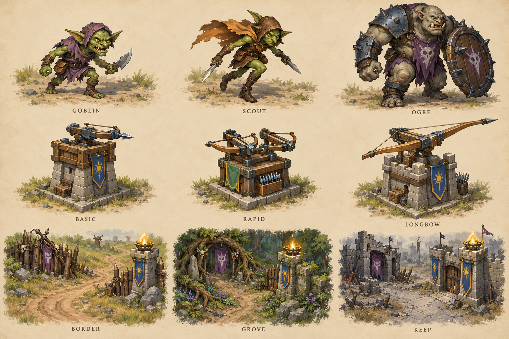
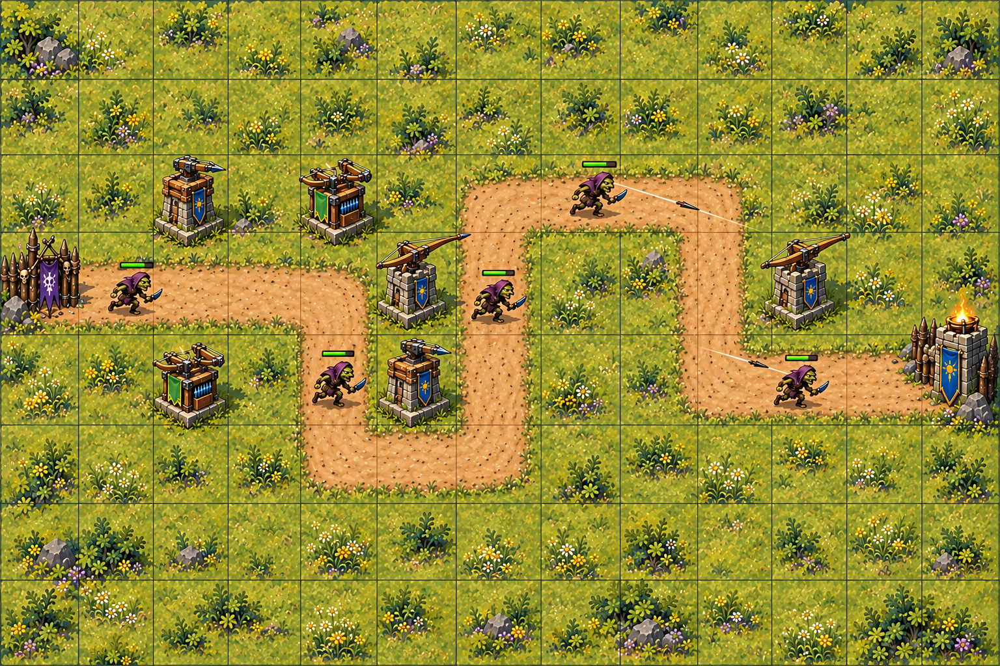

M16 / THE LAST BEACON / ART REVIEW
Fantasy vẽ tay — goblin, tháp và thành trì
Artwork sinh bằng imagegen built-in. Trang này là bộ duyệt hình ảnh; runtime của game vẫn là M15.
1. Bảng concept

2. Mockup ở viewport 960×640
Khung map/sidebar/footer được đặt đúng tọa độ bằng HTML. Bật lưới để so ảnh vẽ với path và vị trí tháp từ source. Artwork sinh còn lệch hình học; nó chưa phải tilemap dùng trong game.

Xem ở zoom trình duyệt 100%; cuộn ngang nếu cửa sổ hẹp. Bản đồ 1536×1024 được hiển thị 768×512 bằng cùng hệ số 0,5 trên hai trục. Các control trong hình chỉ là trình bày.
3. Silhouette trong khung 56–64 CSS px
Các khung là crop vùng concept được trình duyệt thu nhỏ, còn nền giấy; chúng không phải sprite đã tách alpha. Kích thước cơ thể và pivot cuối cùng sẽ chốt trong M17. Dùng các khung này để xem chi tiết nào còn đọc được.
4. Điểm cần chốt trước M17
| Hạng mục | Quan sát / trạng thái |
|---|---|
| Palette và chất liệu | Da goblin, vải tím/cam, giáp ogre và gỗ/đá/thép có bản sắc rõ; chờ người dùng nghiệm thu. |
| Góc nhìn | Bảng concept thể hiện nhân vật gần góc 3/4; sprite sản xuất cần kiểm tra góc overhead đồng nhất khi đi bốn hướng. |
| Lưới và footprint | Ba lần tạo mockup vẫn còn sai lệch tọa độ/tỷ lệ trong ảnh. Dừng thử sinh ảnh cho lỗi này; overlay source là chuẩn. M16 chưa đạt tiêu chí khớp hình học. |
| Silhouette nhỏ | Ogre/khiên rộng, cánh Longbow dài và chi tiết cơ khí dễ bị nhỏ đi. Cần thu gọn dáng và kiểm tra bbox lúc sản xuất frame. |
| Terrain và cổng | Props trong concept có chỗ đậm/rậm; cổng chạm biên ảnh. Bộ tiles/gates M19 cần padding và giữ mọi ô đất trống nhìn rõ để xây. |
| Runtime | Chưa tích hợp PNG vào game; ảnh chưa có atlas, alpha riêng hoặc animation. HP/speed/range/cadence/damage và path giữ nguyên trong source. |
Người dùng cần review hướng mỹ thuật và các sai lệch đã ghi. Chỉ chuyển sang sản xuất sprite sau khi nghiệm thu hoặc thống nhất điều chỉnh tiêu chí M16.